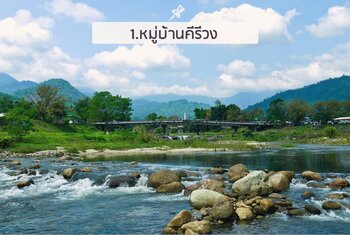
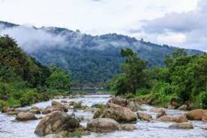

หมู่บ้านคีรีวง
ชุมชนต้นแบบในการจัดการธุรกิจท่องเที่ยวเชิงนิเวศในจังหวัดนครศรีธรรมราช ที่มีวิถีชีวิตแบบชาวสวนอยู่กับธรรมชาติ และได้พัฒนา การบริการนักท่องเที่ยวขึ้นมาเป็นธุรกิจใหม่ของชุมชน จุดเด่นของหมู่บ้านคีรีวง ก็คือ ทัศนียภาพแห่งธรรมชาติ เพราะคีรีวงตั้งอยู่ท่ามกลางเทือกเขา ป่าไม้และสายน้ำ กิจกรรมที่น่าสนใจ ในหมู่บ้านคีรีวง คือ การพักในที่พักแบบโฮมสเตย์ เพลินตาและเพลินอารมณ์กับทัศนียภาพแห่ง ธรรมชาติ ที่ตั้งอยู่ท่ามกลางเทือกเขา ป่าไม้ ปั่นจักรยานชมวิวสูดอากาศบริสุทธิ์ ซึ่งสามารถหาเช่าจักรยานได้ตามร้านเช่าจักรยานในจุดต่างๆ รอบหมู่บ้าน
